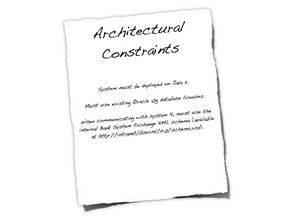

Software architecture document guidelines
Table of Contents
see: http://www.codingthearchitecture.com/pages/book/software-architecture-document-guidelines.html
Please see the Software Architecture for Developers book for the most up to date version of these guidelines.
The purpose of the software architecture document (SAD) is to provide information that is complementary to the code. At a high level, this might include:
Figure 1: Software architecture document
- An outline description of the software architecture, including major software components and their interactions.
- A common understanding of the drivers (requirements, constraints and principles) that influence the architecture.
- A description of the hardware and software platforms on which the system is built and deployed.
- Explicit justification of how the architecture satisfies the drivers.
See The code doesn't tell the whole story for the rationale on why software architecture documentation is necessary. As a guiding principle; the software architecture document should contain information that is complementary to the code and describe what the code itself doesn’t.
The following sections illustrate the content that should be included in a software architecture document and present information from several different views to take the most common stakeholders into account. It's worth noting that all of these views aren't necessarily required when taking into account factors such as project size, complexity, requirements, team, etc. If the information is available elsewhere, the software architecture document should make a reference to that source rather than repeating it (e.g. non-functional requirements may be stated in the requirements documentation and designs may be in separate design documents or a UML model). The SAD is a living document and may not contain all of the information listed here at any point in time.
Context
Understanding the system landscape
One of the hardest things about software development is being asked to come up with a design when all you're given is a set of requirements and a blank sheet of paper. One of the first things I do is step back to see the big picture. What exactly is the context here? What is this all about? What is it we're building and how does it fit in with the existing environment?
A really useful starting point can be to draw a simple block diagram showing your system and all of the other systems that it interfaces with. For example, if you're building an Internet Banking system you might have an existing core banking system that contains all of the information about customers and their accounts, along with your new systems that allow customers and administrative staff to access this information. Detail isn't important here. It's your wide angle view showing a big picture of the system landscape.
Figure 2: Context 1
Using a whiteboard or a sheet of flip chart paper and a set of index cards is an excellent way to get started. In the diagram above, each index card represents a separate, distinct software system that has been annotated with a very high-level statement of its responsibilities. This is very similar to Class-Responsibility-Collaboration (CRC) cards although we're working at a very coarse level of granularity and showing collaborations as explicit connections between the cards.
Such diagrams help you determine the context that your system operates in, which is useful to identify who you potentially need to go and talk to as far as inter-system interfaces are concerned. There are a number of ways to draw these types of diagrams, such as showing your system in the centre of the diagram with inbound/outbound connections surrounding it or you could also choose to show the key actors that have interactions with your system. It's also common to annotate the inter-system connections with some information about their purpose although, as with any diagram, a short supporting commentary is essential.
Figure 3: Context 2
Abstraction is the key here and detail isn't important as this is a starting point for other diagrams.
Functioinal View
What does the software do?
The functional view allows you to summarise what the key functions of the system are. It also allows you to make an explicit link between the functional aspects of the system (use cases, stories, etc) and explain why they are significant to your architecture. A functional view should answer the following types of questions.
- Is it clear what the system actually does?
- Is it clear which features/functions/use cases are significant to the architecture and why?
- Is it clear who the key functional users are (roles, actors, etc) and how the system caters for their needs?
- It is clear that the above has been used to shape and define the architecture?
Figure 4: Functional view
By all means refer to existing documentation if it's available, or simply produce a summary. The use case diagram above summarises the major features for a public facing website. It shows a couple of user roles (actors) and the major features (use cases). Again, the purpose of this section is to put some context around the software.
Process View
Does your software automate or implement a business process?
The process view allows you to show what the system does at a high level, and it also provides you with an opportunity to show how the smaller steps within the process fit together. This is particularly useful if the system is implementing or automating a business process and can be used to highlight aspects such as parallelism, concurrency, where processes fork or join, etc. A process view should answer questions like the following.
Is it clear what the system does from a process perspective? Are the process steps, their order and the flow of information clear? Are the major flows of information through the system well understood and documented?
Figure 5: Process view
Again, this doesn't necessarily need to be a long section and diagrams can be used to illustrate the processes. The UML activity diagram above is a very high-level view of the overall process implemented by a software system. It shows the major steps in the process, some of which are performed concurrently. Like the functional view, this is another way to set the scene.
Non-functional View
Are there any significant system characteristics?
The non-functional view allows you to re-iterate or summarise the key non-functional requirements as well as explicitly highlighting those that are deemed as architecturally significant and influence the architecture.
Figure 6: Non-functional View
Each non-functional requirement should be precise, leaving no interpretation to the reader. Examples where this isn’t the case include; "the request must be serviced quickly", "there should be no overhead", "as fast as possible" , "as small as possible" and "as many customers as possible". A non-functional view should answer the following types of questions.
- Is there a clear understanding of the non-functional requirements that the architecture must satisfy?
- Are the non-functional requirements specific, measurable, achievable, relevant and timely?
- Have non-functional requirements that are usually taken for granted been explicitly marked as out of scope if they are not needed (e.g. "user interface elements will only be presented in English" to specify multi-language support out of scope).
- Are any of the non-functional requirements unrealistic? (e.g. true 24x7 availability is typically very costly to implement).
Here are some of the most common non-functional requirements:
- Performance (e.g. latency and throughput)
- Scalability (e.g. data and traffic volumes)
- Availability (e.g. uptime, downtime, scheduled maintenance, 24x7, 99.9%, etc)
- Security (e.g. authentication, authorisation, data confidentiality)
- Extensibility
- Flexibility
- Auditability
- Monitoring and management
- Reliability
- Failover/disaster recovery targets (e.g. manual vs automatic, how long will this take?)
- Interoperability
- Legal and regulatory requirements (e.g. data protection act)
- Internationalisation and localisation
- Accessibility
Typically, very few people will give you a set of non-functional requirements, let alone write them down. This is why management of the non-functional requirements is a key part of the software architecture role, so I find it useful to include them in the software architecture document.
Constraints
If you have constraints, how do they affect the architecture?
Software lives within the context of the real-world, and the real-world has constraints. This section allows you to state these constraints so it's clear that you are working within them and obvious how they affect your architecture decisions.

Figure 7: Constraints
Constraints are typically forced upon you, usually by the organisation or customer that has asked for the software system to be built. Example constraints include:
- Time, budget and resources.
- Approved technology lists and technology constraints.
- Local standards (e.g. development, coding, etc).
- Public standards (e.g. HTTP, SOAP, XML, XML Schema, WSDL, etc).
- Standard protocols.
- Standard message formats.
- Skill profile of the development team.
- Nature of the project (e.g. tactical or strategic).
Constraints may be imposed upon you but they aren't all bad. In the words of T.S.Eliot, "Given total freedom the work is likely to sprawl". Give somebody one week to do a task and that task will take one week. Give them two weeks and that same task will take two weeks. Without constraints, there are often an infinite number of ways to solve the problem. Reducing the number of available options often makes your job designing software easier.
Such constraints have the power to massively influence the architecture, particularly if they limit the technology that can be used to build the solution. If constraints do have an impact, it's worth summarising them (e.g. what they are, why they are being imposed and who is imposing them) and stating how they are significant to your architecture. Doing this prevents you having to answer questions about why you've seemingly made some whacky decisions.
Principles
What principles do you want to adopt?
The architectural principles section allows you to highlight those principles that have been used (or you are using) to define the architecture. These could have been explicitly asked for or they could be principles that you want to follow. Example principles include; architectural layering, use of frameworks and libraries, common design patterns and templates for building components and common approaches (e.g. error handling, logging, etc).
Figure 8: Principles
Principles help you to introduce consistency and clarity into a software project, so it's important that everybody on the team has a common understanding of them.
Logical View
What is your big picture?
The logical view is your “big picture” and allows you to present the structure of the system through its components and their interactions. Typically this will include high level technology choices, but the decision to include this is yours.
Figure 9: Logical View
- Is a logical view of the architecture clearly portrayed?
- Does it show the major components and interfaces?
- Are they described at a high level?
- Does the logical view show external systems and any other dependencies at a high level (low level detail about the dependencies isn’t required here)?
- Is it clear how the system works from the “30,000 foot view”?
Interface View
Interfaces are risky - do you know how yours work?
Closely related to the logical view is the interface view. Interfaces are one of the riskiest parts of any software system, so it’s very useful to show what the internal/external interfaces are and how they work.
Figure 10: Interface View
- Are the key internal (e.g. databases, messaging systems, etc) and external interfaces (e.g. other systems) well specified at a high level?
- If messaging is being used, which queues (point-to-point) and topics (pub-sub) are components using to communicate?
- What format are the messages (e.g. plain text or XML defined by a DTD/Schema)?
- Are they synchronous or asynchronous?
- Are asynchronous messaging links guaranteed?
- Are subscribers durable where necessary?
- Can messages be received out of order and is this a problem?
- Who has ownership of the interfaces?
- Are interfaces idempotent?
- How often does the interface change and how is versioning handled?
- Is the interface always available or do you (e.g.) need to cache data locally?
Design View
Do any of the lower level details need explaining?
The design view is where the lower level implementation details start to make an appearance. For example, this could include information such as how your architectural layering will be implemented through to documenting blueprints/common usage patterns for the technologies/frameworks you have chosen for the implementation. Depending on your team size, you may or may not find including this low level of detail useful.
Figure 11: Design View
- Is it well understood how the key use cases will be implemented?
- How are the chosen technologies used and combined?
- Are there common patterns across the architecture?
- If yes, are these well understood and documented?
- Are the diagrams (e.g. UML class and sequence) up to date and do they reflect reality?
- Is there too much detail?
- Are any common wheels being reinvented? If so, why aren’t vendor/open source products being used?
- If the code isn’t enough, is there enough information here to provide the rest of the development team with an overview/the intent of how the designs work?
Infrastructure View
Does the infrastructure support your software?
The infrastructure view is used to describe the physical hardware and networks on which the software will be deployed. Often, you may not be involved in designing the infrastructure, but you do need to understand that it’s sufficient for your purposes.
Figure 12: Infrastructure View
- Is there a clear physical architecture?
- What hardware does this include across all tiers?
- Does it cater for redundancy, failover and disaster recovery if applicable?
- Is it clear how the chosen hardware components have been sized?
- If multiple boxes and sites are used, what are the network links between them?
- Who is responsible for support and maintenance of the infrastructure?
- Are there central teams to look after common infrastructure (e.g. databases, message buses, application servers, networks, routers, switches, load balancers, reverse proxies, internet connections, etc)?
- Who owns the resources?
- Are there sufficient resources for development, testing, acceptance, pre-production, production, etc?
Deployment View
How does your software map onto the infrastructure?
The deployment view details how the software will be deployed onto the physical infrastructure.
Figure 13: Deployment View
- Is it clear how the software components will be deployed across the hardware elements described in the physical view? (e.g. one-to-one mapping, multiple software components per server, etc)
- If this is still to be decided, what are the options and have they been documented?
- Is it understood how memory and CPU will be partitioned between the processes running on a single hardware node?
- Which components are active-active and which are active-passive?
- Which components can be scaled-out?
- Is it clear how data is replicated across sites?
- Has the rollout and recovery strategy been defined (this might be in a separate document, but referenced)?
- How are the components installed and configured?
Operational View
How will people run, monitor and manage your software?
Most systems will be subject to support and operational requirements, particularly around how they are monitored, managed and administered. Including a dedicated section in the software architecture document again lets you be explicit about how your architecture will support those requirements, particularly if you enlist the help of the team that are ultimately going to support your system.
Figure 14: Operational View
- Is it clear how the architecture provides the ability for operation/support teams to monitor and manage the system?
- How is this achieved across all tiers of the architecture (e.g. from client tier to database)?
- How can operational staff start to diagnose problems?
- Where are errors and information logged? (e.g. log files, Windows Event Log, SMNP, JMX, WMI, custom diagnostics, etc)
Security View
Is security a key non-functional requirement?
Security is an important aspect of most systems, so it’s essential that it is thought about and documented clearly. Having a dedicated security section provides a way to explain how your architecture will meet security requirements such as authentication, authorisation, data confidentiality, etc. Some organisations have specialised security teams that will help with and/or need to review your work in this area before deploying your system into a production environment. Being explicit about security helps you spot any holes before it’s too late.

Figure 15: Security View
Is there a clear understanding of how security is handled within the architecture and how have any security requirements have been satisfied? This may cover:
- Authentication.
- Authorisation.
- Confidentiality of data between components (e.g. during user login, during requests between components, using technologies such as web services or messaging, across public networks).
- Non-repudiation.
- Different types of users and their roles.
- The use of a security realm or integration with in-house single sign-on mechanisms.
- Network separation using firewalls and DMZs (red, amber, green model).
- Restricted access to resources.
- Permissioning of data of a per user/role/etc basis and the ability to modify those permissions.
- Storage of credentials (e.g. database logons).
- Distribution of certificates and keys.
- Runtime sandbox.
- Signed binaries.
- Essential code only on each architectural tier.
Data View
Is your software very data-centric?
A specific data view is worth including in your architecture diagram if your system is data-centric; managing a large quantity of data or dealing with complex data flows. This section can include information such as sizing and capacity planning through to archives and backups.
Figure 16: Data View
- Is there a high level understanding of how much storage will be required to persist data?
- What are the archiving and back-up strategies?
- Are there any regulatory requirements for the long term archival of business data?
- Likewise for log files and audit trails?
Technology Selection
Why did you choose X?
Including a technology selection section in your software architecture document gives you somewhere to document the decisions that went into choosing or not choosing technologies. It’s often useful to have a summary of these decisions so that they can be referred to later in the project.
Figure 17: Technology Selection
- Is it clear why the selected technologies were chosen?
- If there were options, why were they not chosen?
- Do they all fit in with the constraints outlined previously?
- Are all software and hardware tiers covered?
Architecture Justification
Does your architecture work?
This section provides a way for you to explicitly state how the non-functional requirements you stated in the non-functional view are satisfied by your architecture. This is an important yet often forgotten piece of the architecture puzzle, and clearly communicating your architecture’s fitness for purpose will help provide everybody with the confidence that your solution will work. If you built an executable reference architecture to prove some of the key non-functional requirements, this is where you can reference that work and the proof of its success.
Figure 18: Architecture Justification
- For each of the non-functional requirements, is it explicit how the architecture satisfies it?
- In the case of performance and scalability targets, are the test cases and results referenced?
- If true 24x7 availability is required, is redundancy and automatic failover built into all aspects of the architecture?
- Are there any single points of failure?
- What happens if a component fails?
- What happens if an external system you rely on fails?
- Does this affect your availability? Are your transactions ACID?
- Would you have 2PC transactions in-doubt?
- Can you recover from a system failure?
- Who is responsible for system recovery and failover?
- Can you recover in a business continuity scenario?
- Will all data have been replicated between sites?
- How do you tell system components to use alternative resources in the event of DR/BCP?
- Has the architecture been reviewed by in-house security risk teams (if applicable)?
The key question you're trying to answer here is whether your architecture "works".